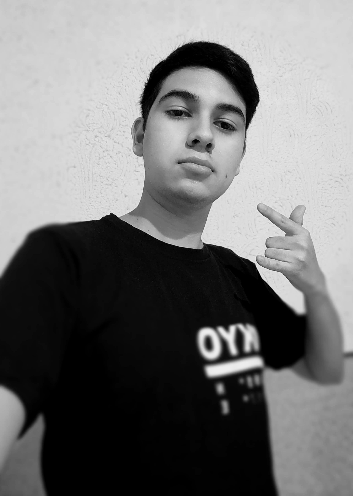
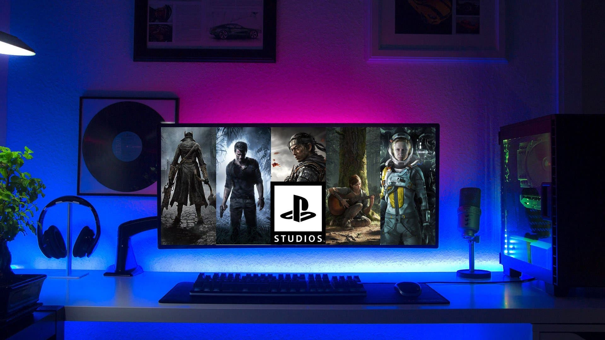

Presentación

Biografía
Mi nombre es Miguel Ángel González Hernández, soy de Uriangato, Gto. Actualmente estoy estudiando en el ITSUR, antes de entrar a ella estudiaba en la preparatoria UG de Moroleón.
Mis pasatiempos son: jugar ajedrez, ver series y películas, también me gusta jugar videojuegos. Solia practicar deportes, por ejemplo: futbol, natacion y karate. Mi comida favorita son las quesadillas, cuando tengo tiempo libre suelo leer novelas ligeras. Desde pequeño me lamaba mucho la atención todo lo que estuviera relacionado con la tecnología. Es por ello que decidí meterme a la carrera de Ingeniería en Sistemas Computacionales. Hasta este momento se me hizo una muy buena desición elegir esta en lugar de otras.


Página elaborada por: Miguel Ángel González Hernández
Contacto:s21120227alumnos.itsur.edu.mx
Ingeniería en Sistemas Computacionales
Otra página